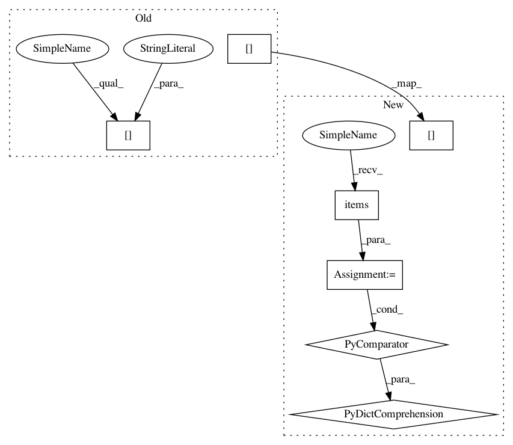

39784035924760e69ec50ab6ab29c8666a595eec,softlearning/replay_pools/replay_pool.py,ReplayPool,add_path,#ReplayPool#Any#,34
Before Change
agent_info,
env_info
) in enumerate(zip(
path["observations"],
path["actions"],
path["rewards"],
path["next_observations"],
path["terminals"],
path.get("agent_infos", {}),
After Change
:param path: Dict like one outputted by railrl.samplers.util.rollout
path_length = path["observations"].shape[0]
self.add_samples(num_samples=path_length, **{
key: value
for key, value in path.items()
if key in self.field_names
})
self.terminate_episode()
@abc.abstractmethod
In pattern: SUPERPATTERN
Frequency: 4
Non-data size: 7
Instances
Project Name: rail-berkeley/softlearning
Commit Name: 39784035924760e69ec50ab6ab29c8666a595eec
Time: 2018-08-22
Author: kristian.hartikainen@gmail.com
File Name: softlearning/replay_pools/replay_pool.py
Class Name: ReplayPool
Method Name: add_path
Project Name: rail-berkeley/softlearning
Commit Name: 74ff03f3c373703439c3ed6bada477812f25bc96
Time: 2018-08-23
Author: kristian.hartikainen@gmail.com
File Name: softlearning/replay_pools/replay_pool.py
Class Name: ReplayPool
Method Name: add_path
Project Name: rail-berkeley/softlearning
Commit Name: f33e7b5201494eb52360efc14dbfc7e6eeb02096
Time: 2018-05-22
Author: kristian.hartikainen@gmail.com
File Name: examples/mujoco_all_sac_real_nvp_hierarchy.py
Class Name:
Method Name: run_experiment
Project Name: rail-berkeley/softlearning
Commit Name: 0e1f9982cbf60d509e87e324c7076f7b44aeea1d
Time: 2018-05-22
Author: kristian.hartikainen@gmail.com
File Name: examples/mujoco_all_sac_real_nvp.py
Class Name:
Method Name: run_experiment